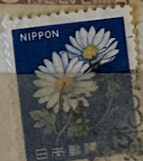
| SOURCE | TITLE| IMAGE MATCH | click to source page |
| eBay | Specimen, Japan Sc881 Flower, Chrysanthemums | eBay | 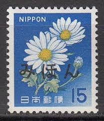 |
| HipStamp | Japan 1966 Sc#881, SG#1049 15y Chrysanthemum USED. | Asia - Japan, General Issue Stamp / HipStamp | 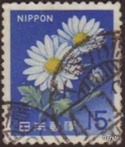 |
| eBay | R6356 Japan 1967 flowers Chrysanthemums 1v. MNH | eBay | 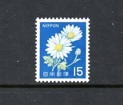 |
| eBay UK | Japan definitive 1967 flower 15y with imprint MNH SAKURA422 | eBay UK | 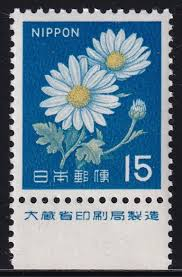 |
| eBay | Handstamped Individual Japanese Stamps for sale | eBay | 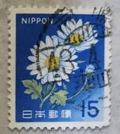 |
| Bridgeman Images | Image of STAMPS of the series “Fauna, Flora and Cultural Heritage” issued by Japanese School, (20th century) | 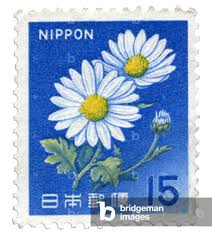 |
| Etsy | Nippon Japan Vintage Postage Stamp Printable Poster | Japan Travel Stationary Aesthetic Floral Daisy | Digital Download - Etsy UK | 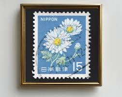 |
| allnumis.com | 15 Yen - Daisy, Flowers - Japan - Stamp - 39035 | 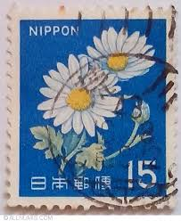 |
| iStock | Beautiful Pastel Flowers On Japanese Vintage Postage Stamp Stock Photo - Download Image Now - iStock | 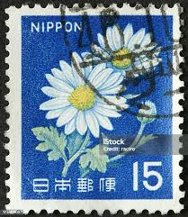 |
| Redbubble | Daisy Japan Postage Stamp 15" Greeting Card for Sale by MEG-mon | Redbubble | 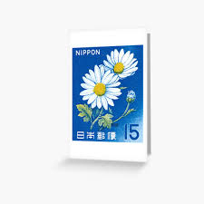 |
| AliExpress | 50/100PCS Creative Japanese Travel Retro Stickers DIY Phone Cases Notebook Water Cups Personalized Stickers - AliExpress 21 | 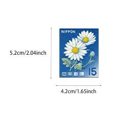 |
| Shutterstock | Flower Postage Stamp: Over 23,408 Royalty-Free Licensable Stock Photos | Shutterstock | 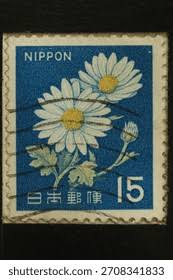 |
| esam.ir | تمبر قدیمی نیپون ژاپن 2 | 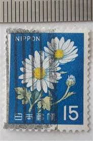 |
| Yahoo! JAPAN | 2026年最新】Yahoo!オークション -郵便書簡 15円の中古品・新品・未使用品一覧 | 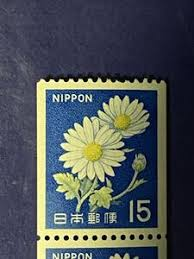 |
| psw-wpss34.xyz | １５円キク発光切手 | 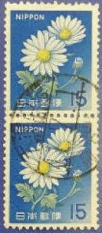 |
| post-stamp.com | 旧キク15円発光切手貼りの昭和44年「大宮局」定形封筒 | ポストスタンプブログⅡ | 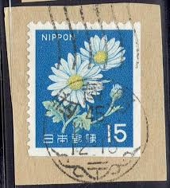 |
| Yahoo! JAPAN | 2026年最新】Yahoo!オークション -唐草機械印の中古品・新品・未使用品一覧 | 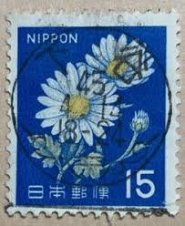 |
| Aukro.cz | Japan 1966 Mi 930 ine raz. | Aukro | 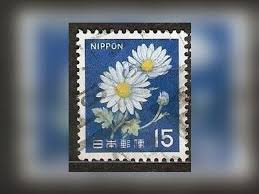 |
| Mercari | 1985 Bulgaria / NR BULGARIA Daisy Leucantheum | Mercari | 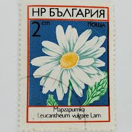 |
| 京誠商行 | 郵票收購- 京誠商行｜黃金收購｜勞力士收購｜郵票收購｜龍銀古幣收購 | 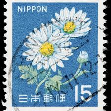 |
| post-stamp.com | 新きく15円のA欄C欄ともに時刻表示のエラー櫛型印 | ポストスタンプブログⅡ | 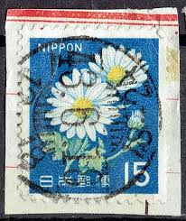 |
| xii.jp | ヤフオクの気になる高額落札品: 切手、ハガキのエラー | 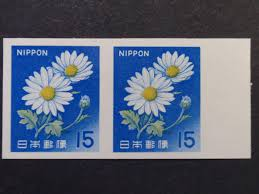 |
| ahd.org.il | 日本切手☆未使用☆15円×2000枚 30000円分 ＊糊 | 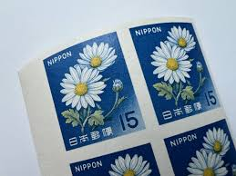 |
| eBay UK | Flowers Stamps for sale | eBay UK | 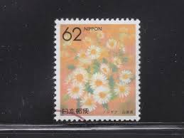 |
| Redbubble | "Daisy Japan Postage Stamp 15" Postcard for Sale by MEG-mon | Redbubble | 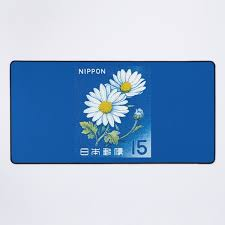 |
| Alamy | Postage stamp san marino hi-res stock photography and images - Alamy | 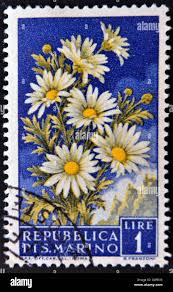 |
| eBay | JAPAN Stamps LOT INCL. Unused Flowers | eBay | 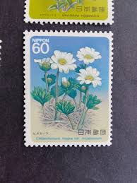 |
| boutique-ab.com | 0394 (San Marino) ⬛ | 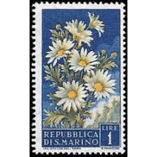 |
| Come share and smell (and ... see!) FLOWERS on stamps and covers - Page 8 - STAMPBOARDS - Postage Stamp Chat Board and Stamp Forum | 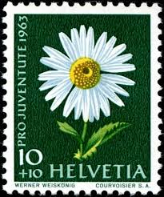 | |
| allnumis.com | 60 groszy - Carline Thistle., Flowers, plants - Poland - Stamp - 20879 | 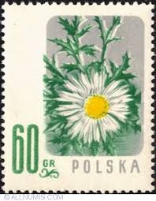 |
| 1967 Japan/Nippon 15-Yen Stamp Block, Daisies from Flora & Fauna Series #postage #stamp #stamps #stampblock #snailmail #poststagestamps #vintagepostage #vintagestamps #japanesestamps #japanesepostage #nipponstamps #nipponpostage #flowerstamps #daisy ... | 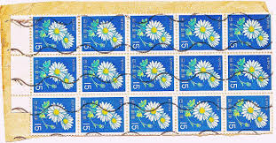 | |
| Redbubble | Carnet for Sale avec l'œuvre « Vintage 1967 Japon Chrysanthème fleur timbre-poste » de l'artiste cutestamps | Redbubble | 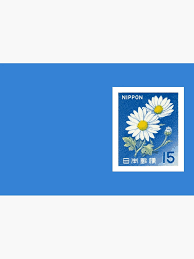 |
| eBay | JAPAN, 3x cover FDC 1966-1967, chrysanthemum flower | eBay | 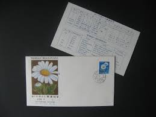 |
| buyhungarianstamps.com | 33-39 Kyrgyzstan - Flowers (MNH) – Eastern Europe Postage Stamps | Hungaria Stamp Exchange | 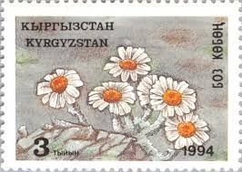 |
| Etsy | Tokyo Japan Daisy Flower Morale Patch for Trucker Hat or Shirt 7.5cm - 3 Inch Iron on or Hook Back - Etsy Israel | 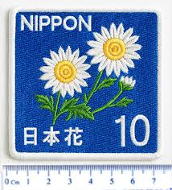 |
| 900+ French Postage Stamps ideas to save today | postage stamps, stamp, stamp collecting and more | 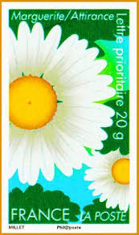 | |
| Alamy | YUGOSLAVIA - CIRCA 1957: A stamp printed in Yugoslavia from the "Personalities" issue shows Anton Linhart, circa 1957 Stock Photo - Alamy | 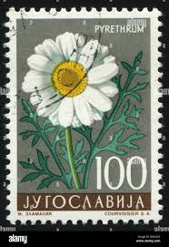 |
| Redbubble | Vintage 1967 Japan Chrysanthemum flower postage stamp " Poster for Sale by cutestamps | Redbubble | 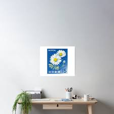 |
| Here's some happy postage on this card created with our NEW Flower of the Month Kit Starter featuring the daisy! Card design by Jill Foster. : : Featured Penny Black products (shop | 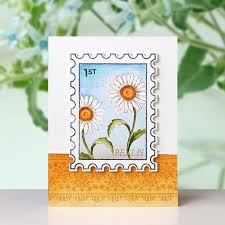 | |
| Dreamstime.com | Rebate Stamps Stock Photos - Free & Royalty-Free Stock Photos from Dreamstime | 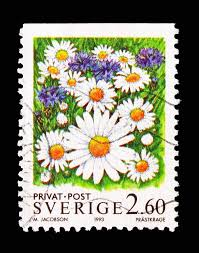 |
| Alamy | Leucanthemum sibiricum hi-res stock photography and images - Alamy | 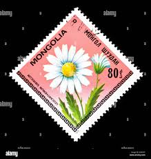 |
| Carousell | 1965/70 JAPAN STAMP MINT, Hobbies & Toys, Memorabilia & Collectibles, Stamps & Prints on Carousell | 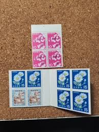 |
| Stamp Auction | Prices Realized | 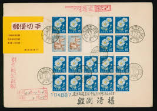 |
| Amazon.com | Amazon.com: Carla Locke: books, biography, latest update | 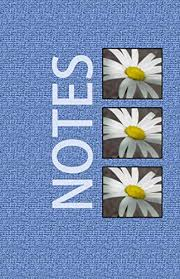 |
| Redbubble | "Vintage 1952 Nederlands daisy stamp" Art Board Print for Sale by kelleyjakelis | Redbubble | 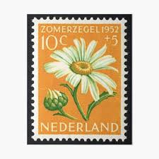 |
| eBay | c.1957 United States Card ties 3 San Marino stamps World Flower Show Chicago cd | eBay | 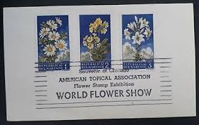 |
| eBay | Finland Stamp 841 - Daisy | eBay | 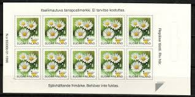 |
| Mystic Stamp Company | 3025-29 - 1996 32c Winter Garden Flowers - Mystic Stamp Company | 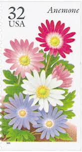 |
| eBay UK | Flowers Used New Zealand Stamps for sale | eBay UK | 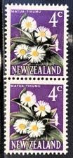 |
| Etsy | Daisy Stamp Sticker - Flowers - Floral - Spring - Summer - Girlie - Etsy UK | |
| Etsy | Vintage Daisy Stamps: Junk Journal Ephemera (digital Download) - Etsy | |
| Dreamstime.com | 2,053 Chamomilla Medicinal Stock Photos - Free & Royalty-Free Stock Photos from Dreamstime | |
| tina truong 🧑🏻🎨🍋 (@tna.arts) • Instagram photos and videos | ||
| Alamy | Food stamps office hi-res stock photography and images - Alamy | |
| Etsy | White Daisies - Postage Stamp Print - Aesthetic Wall Art - Postage Stamp Wall Poster - Vintage Poster Print - Etsy | |
| eBay | 1895 Graduation Reception Murdock School High Vintage Winchendon Massachusetts | eBay | |
| Etsy | White Flower Usps Stamps - Etsy | |
| Etsy | Buy 5 Anemone Stamps, Unused Postage Stamps, 32 Cent Stamps, Flower Stamps, Vintage Collectible Stamps Online in India - Etsy | |
| eBay | Flowers Great Britain Regional Stamp Issues for sale | eBay |